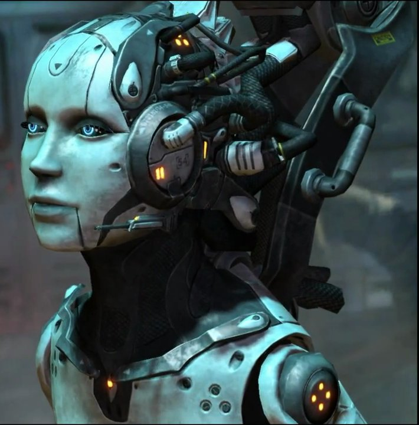

- Database
- Overview
- History
- Physiology
- Culture
- Factions
- Technology
| Terran |
| Units |
| Command Center | SCV | Mule |
| Barracks | Marine | Marauder | Ghost | Reaper |
| Factory | Hellion | Siege Tank | Thor |
| Starport | Medivac | Viking | Banshee | Raven | Battlecruiser |
| Structures |
| Basic Buildings | Command Center | Orbital Command | Supply Depot | Refinery |
| Defensive Buildings | Planetary Fortress | Bunker | Missile Turret | Sentry Tower |
| Infantry Buildings | Barracks | Engineering Bay | Ghost Academy |
| Mechanical Buildings | Factory | Starport | Armory | Fusion Core |
| Add-ons/Spawned | Auto-Turret | Point Defense Drone | Tech Lab | Reactor |
- Overview
General
The terrans are a young technology species with psionic potential. The terrans of the Koprulu Sector descend from the survivors of a disastrous 23rd century colonization mission from Earth. Compared to the protoss and zerg, the terrans are highly factionalized and endure frequent wars amongst themselves in addition to the more recent conflicts with their alien neighbors. Nevertheless, terrans stand as one of the three dominant species of the galaxy.
{kind=link}
Namesake
The term terran generally refers to the humans descending from the survivors of the "Long Sleep" and consequently to the human inhabitants of the Koprulu Sector. The term may be used synonymously with human and terrans of the Sector may extend its meaning to encompass those not descending from the "Long Sleep".
Humans of the Earth-based United Earth Directorate refer to themselves as humans, mankind or humanity, although they are sometimes referred to as terrans by Blizzard Entertainment.
Source Information
Text information from the Starcraft Wiki.
Photo 1 created by Saejin Oh. Copyright: Saejin Oh. Link to deviantart page.
- General History
The terrans arrived in the Koprulu Sector via supercarriers in 2259, landing on three separate planets – Tarsonis, Moria and Umoja. They were cut off from Earth. The terran population expanded rapidly for at least three generations.
Prior to the Great War, the terrans were primarily divided into three factions in the Koprulu Sector, each based on one of the original settled planets – the Terran Confederacy, Kel-Morian Combine and Umojan Protectorate. The Confederacy was the strongest faction.
During the Great War the Terran Confederacy, experimenting with psi emitter technology, bore the brunt of attacks by the zerg (infested planets were frequently purified by the protoss) while facing the Sons of Korhal. The Sons of Korhal eventually destroyed the Confederacy by using stolen psi emitters to lure the zerg to Tarsonis; the rebels created the Terran Dominion, based on Korhal, to replace the Confederacy.
Unknown to the terrans of the Koprulu Sector, the humans of Earth were aware of their existence. However, no interference came from Earth until the discovery of the alien invaders, sparking panic. The new Earth government, the United Earth Directorate, dispatched an Expeditionary Fleet to take control of the sector and defeat the aliens. After approximately six months of stability, the Dominion came under attack by the UED. Ultimately the sector escaped UED control, but it left the Dominion weak and with the zerg as the sector's dominant power.
By the Second Great War, the Dominion was the strongest terran force in the Koprulu Sector, vying with the Kel-Morian Combine and the Umojan Protectorate for influence. On the eve of war, Raynor's Raiders resumed its anti-Dominion campaign after a period of relative inactivity. The terran polities were engulfed at the start of the Second Great War by a massive zerg invasion. Kerrigan's objective was the recovery of a xel'naga device, and the invasion was a way of searching for it. Billions of terrans were killed.
{kind=link}
{kind=link}
Source Information
Text information from the Starcraft Wiki.
Photo 1 created by Blizzard Entertainment. Copyright: Blizzard Entertainment.
Photo 2 from StarCraft Cinematic DVD. Copyright: Blizzard Entertainment.
- Overview
Physiology
 The average terran is 1.8m tall. Maximum human life expectancy is at least 150 years, without any mental degradation, though few terrans live over a century and terrans over the age of 80 are still considered old.
The average terran is 1.8m tall. Maximum human life expectancy is at least 150 years, without any mental degradation, though few terrans live over a century and terrans over the age of 80 are still considered old.
Blonde hair and blue eyes still occur naturally in terrans though these traits (and others) can be altered by gene therapy and/or augmentic surgery. This can lead to a certain uniformity of appearance for those wealthy enough to afford such treatments.
Physically, terrans are inferior to species such as the zerg and protoss and for all intents and purposes, mentally as well. However, terrans are known for their tenacity and ability to adapt to harsh circumstances. In addition, terrans are only a few steps away from developing into a formidable psionic power.
Terrans are a suspicious species by nature, and their inner thoughts rarely correspond to how they present themselves to others.
Source Information
Text information from the Starcraft Wiki.
Photo 1 created by Blizzard Entertainment. Copyright: Blizzard Entertainment.
- Overview
Culture
Before the founding of the United Powers League, terrans possessed a diversity of beliefs; beliefs that were subsequently repressed. This remained true with the Terran Confederacy, which had limited tolerance for "other faiths". However, a few planets in the Koprulu Sector, notably the Fringe Worlds, have resurrected old Earth religions, Christianity among them, in addition to creating cults, the Church of Besainted Pelagius being one example. For more agnostic societies, some terrans still believe in the existence of a monotheistic deity, though others are distinctively skeptical.
Despite fragments of Earth's history being absent from terran records, some ancient mythologies are still remembered. These include tales of various afterlifes and their dark alternatives, including Hell, Tartarus and Sheol. "Warrior women" are remembered from at least one mythology and elements of Greek mythology have been retained also.
At least in the Koprulu Sector, terran cusine is highly varied. Many terrans pursue consumerism.
One belief, or rather hope that has remained more-or-less constant for humanity is a fascination with the existence of other sapient life – a hope that remained unfulfilled until contact was made with the protoss and zerg. The rulers of the United Powers League were of a different mindset than their Koprulu counterparts, demonstrating a purely millitaristic and xenophobic approach to the discovery of alien species.
If one takes an outsider's view on humanity, (e.g. a protoss's), then humanity possesses a wide, puzzling spectrum of morality. When compared to the elder species, terrans are far more obsessed with the notion of private thought and personal freedom and are "not meant for" the unity the Khala brings. Having experienced it however, a terran ghost theorized humans could become a better people were they able to share the psionic link. Terrans have displayed disregard for the natural world in a manner anathema to the protoss.
{kind=link}
{kind=link}
Source Information
Text information from the Starcraft Wiki.
Photo 1 created by Blizzard Entertainment. Copyright: Blizzard Entertainment.
Photo 2 created by Blizzard Entertainment. Copyright: Blizzard Entertainment.
- Overview
Factions
The terrans are a heavily factionalized species, with many different governments and even more groups trying to overthrow said governments. The three dominant factions in the Koprulu Sector are the Kel-Morian Combine, Terran Dominion and the Umojan Protectorate, the Dominion having taken the place of the now defunct Terran Confederacy. Earth and its colonies are controlled by the United Earth Directorate, though this is not absolute.
 Many rebel groups sparr(ed) with colonial powers, which have had varying degrees of success in achieving their goals. Hardly a week goes by without there being some military or policing action being reported in the Koprulu Sector. Military cohesiveness within units however, makes terrans a force to be reckoned with.
Many rebel groups sparr(ed) with colonial powers, which have had varying degrees of success in achieving their goals. Hardly a week goes by without there being some military or policing action being reported in the Koprulu Sector. Military cohesiveness within units however, makes terrans a force to be reckoned with.
{kind=link}
Source Information
Text information from the Starcraft Wiki.
Photo 1 created by Blizzard Entertainment. Copyright: Blizzard Entertainment.
Photo 2 created by Blizzard Entertainment. Copyright: Blizzard Entertainment.
- Overview
Technology
On the galactic scale, terrans are perhaps a "middle of the road" species and something of a paradox technologically. Of the galaxy's sapient species, terrans are significantly inferior to the likes of the protoss yet (seemingly) more advanced than other sapients.
From an outsider's point of view, humanity has paradoxically improved its technology despite being in an apparently constant state of conflict. From an insider's point of view, such development has been possible not in spite of conflict, but because of it.
{kind=link}
Source Information
Text information from the Starcraft Wiki.
Photo 1 created by Blizzard Entertainment. Copyright: Blizzard Entertainment.